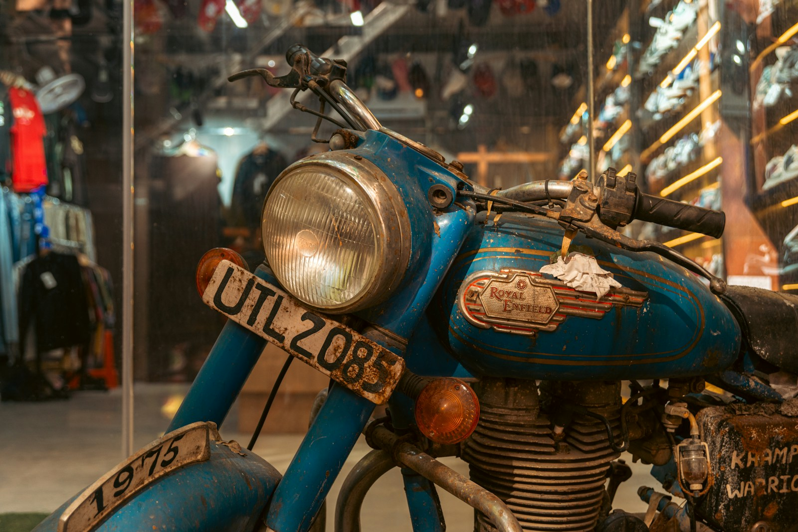
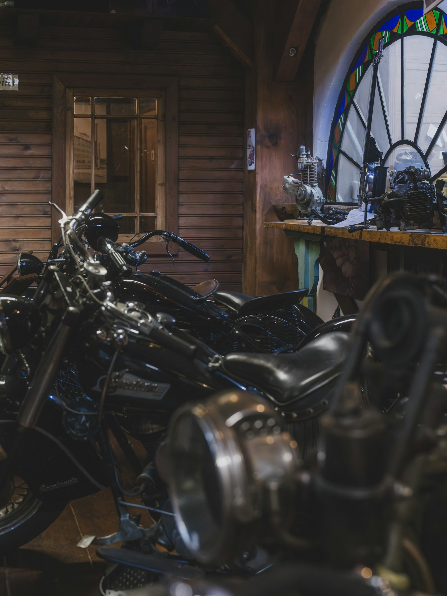
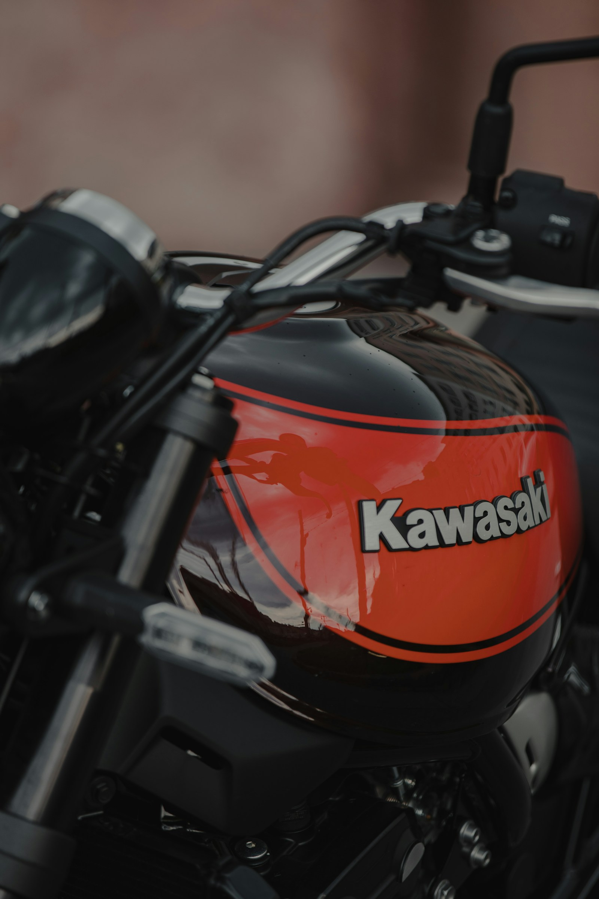
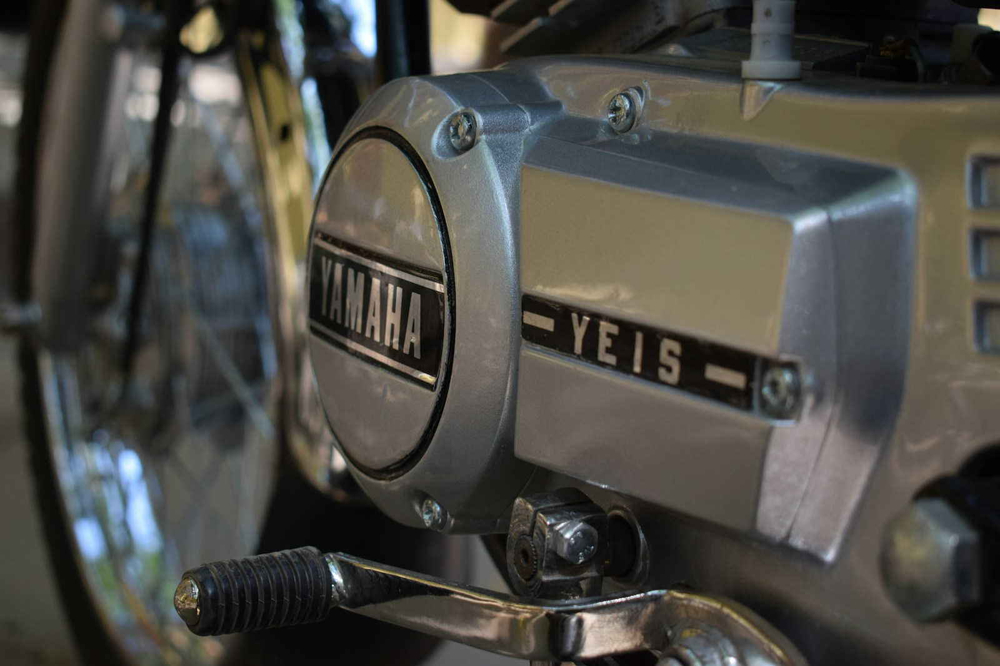
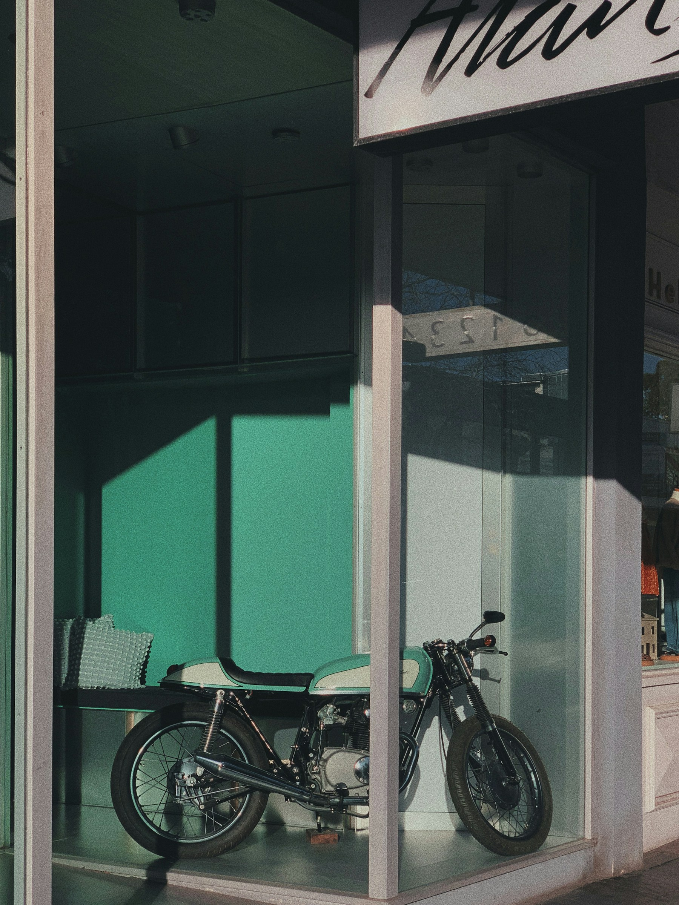
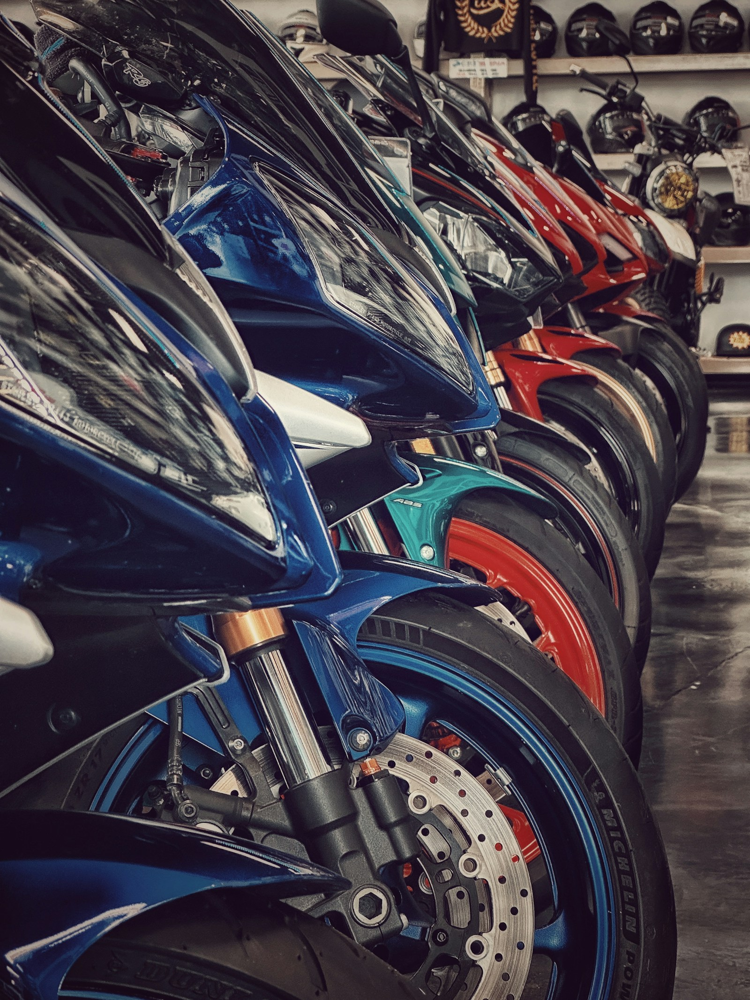

Nous visons des motos coherentes, propres et interessantes pour la collection.
Nippon Heritage • Motos japonaises de collection
Specialiste de l'import de motos 2 temps de plus de 30 ans.
Nous sourcons au Japon des motos saines, peu kilometrees et desirables, puis nous les remettons en etat en France avant la revente. Pas d'homologation, pas de volume inutile, uniquement des bases choisies.
Controle, remise en etat et presentation avant la mise en vente en France.
Import, remise en etat, vente. Aucune rubrique homologation n'est proposee.
Import moto de collection
2 temps uniquement
Japon
Faible kilometrage privilegie
Atelier en France
Selection rigoureuse
MOTOS EN STOCK
Exemples d'arrivages et de modeles suivis.
Cette maquette reprend l'esprit catalogue de tes references avec un vrai bloc de filtres, des fiches motos et un ton plus premium.

1992
250 cc
Japon
Honda NSR250R MC21
Sportive 2 temps emblematiques, base saine privilegiee pour une vente collection.

1991
250 cc
Japon
Yamaha TZR250 3XV
Profil sport collection pour passionnes de 2 temps japonais a forte identite.
1993
250 cc
Japon
Suzuki RGV250 Gamma
Machine plus pointue, destinee a une clientele qui cherche une vraie rarete sportive.

1990
250 cc
Japon
Kawasaki KR-1S
Positionnement expert et niche, parfait pour une identite de specialiste assume.

1991
250 cc
Japon
Yamaha R1-Z
Roadster 2 temps tres caractere, interessant pour differencier l'offre du catalogue.

1985
400 cc
Japon
Honda NS400R
Une piece plus rare, selectionnee pour renforcer le positionnement heritage de la marque.
RECHERCHE PERSONNALISEE
Une moto precise en tete ? Nous pouvons la rechercher pour toi.
Le formulaire reprend l'esprit de ta reference mais l'adapte a ton activite: recherche ciblee, budget, base saine, motos 2 temps de collection uniquement.
NOS SERVICES
Import, selection, atelier et vente de motos preparees.
Import selectif depuis le Japon
Le sourcing ne vise pas la quantite. Chaque moto est choisie pour sa coherence, son etat de depart et sa valeur potentielle une fois remise en presentation pour le marche francais.
- Recherche de motos de plus de 30 ans
- Priorite aux bases saines et peu kilometrees
- Selection adaptee a une clientele collection

Remise en etat atelier avant mise en vente
Tu ne proposes pas une importation brute. Le site insiste donc sur le controle, la mise au propre, la presentation et la coherence mecanique avant qu'une moto n'arrive dans les mains d'un acheteur.
- Controle visuel et technique a reception
- Interventions selon l'etat reel de la machine
- Presentation propre et valorisante avant diffusion
Vente de motos de collection a forte personnalite
Le discours commercial est recentre sur la desirabilite, la confiance et la rarete. C'est plus premium, plus clair et plus proche du niveau de presentation que tu voulais atteindre.
- Catalogue lisible et plus haut de gamme
- Recherche personnalisee pour demandes precises
- Aucune rubrique homologation integree au site
ATELIER & METHODE
Une methode courte, lisible et credible.
Le site raconte tres clairement comment une moto arrive jusqu'a la vente, sans promettre de services que tu ne veux pas proposer.
Reperage
Veille des modeles suivis, lecture de l'etat reel et tri rigoureux des opportunites.
Achat cible
Priorite aux motos completes, desirables et adaptees a une remise en etat serieuse.
Preparation
Controle, nettoyage, intervention atelier et mise en presentation avant publication.
Vente
Diffusion plus premium, echange direct avec les acheteurs et recherche sur commande.
CONTACT
Un site pense pour inspirer confiance et convertir.
La base est maintenant beaucoup plus proche de tes captures: noir, orange, hero photo, catalogue, recherche personnalisee et services en blocs. Il restera a brancher tes vraies coordonnees et tes vrais stocks.
Import selectif de motos 2 temps japonaises de collection, remises en etat puis revendues en France.
Le site met en avant les modeles en stock, la recherche sur commande, l'atelier et le contact.
On pourra ensuite remplacer les exemples par tes vraies motos, tes vrais textes et tes coordonnees.